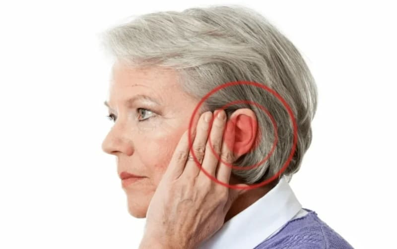
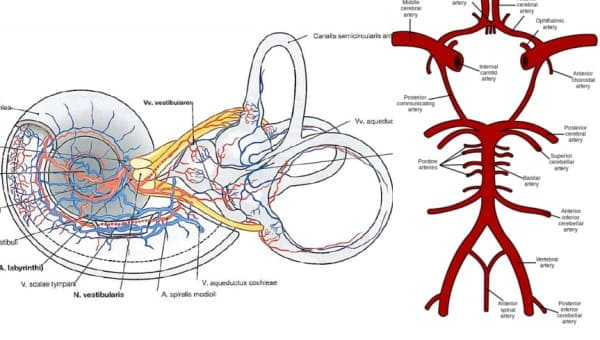
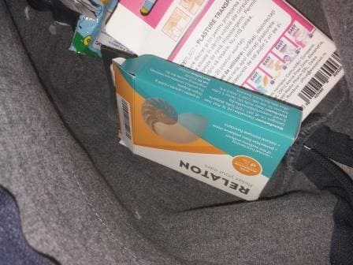
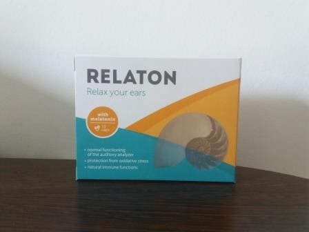

Główny otolaryngolog w kraju: „Związane z wiekiem zmiany w komórkach czuciowych
i uchu środkowym prowadzą do głuchoty. Jest droga do zbawienia, ale nie dla każdego”

Katarzyna Soltys: „Gwarantuję, że każda osoba z chorobami słuchu otrzyma w cenie
promocyjnej preparat , który pomoże wyeliminować problemy ze słuchem i zapobiec
głuchocie”
Z konferencji prasowej Katarzyny Soltys, specjalista w dziedzinie otolaryngologii: „Ponad połowa
ludzi po 45 roku życia traci słuch z powodu związanych z wiekiem zmian w komórkach
czuciowych i uchu środkowym. Operacje są bezużyteczne i niebezpieczne. Co czwarta osoba staje
się całkowicie głucha”
Ekskluzywny wywiad z Katarzyną Soltys, specjalistą w dziedzinie otolaryngologii: „Dlaczego
ludzie po 45 roku życia szybko tracą słuch i jak uchronić się przed całkowitą głuchotą?”
Reporter: Dlaczego Pani uważa, że ubytek słuchu związany z wiekiem jest poważnym
problemem?
Katarzyna: Czy wiesz, ile osób całkowicie straciło słuch w 2019 roku?
W naszym regionie ponad 34 tysiące osób stało się całkowicie głuchych.
Około 55 tysięcy osób znajduje się na skraju głuchoty. Czyli faktycznie 90 000
osób straciło słuch. Związane z wiekiem zmiany w uchu środkowym i
komórkach czuciowych występują u wszystkich, niezależnie od stanu
fizycznego. A jeśli 50 lat temu obciążenie słuchu nie było tak duże, teraz hałas w mieście
stał się o kilka rzędów wielkości silniejszy.
Utrata słuchu związana z wiekiem z biegiem czasu nieuchronnie
prowadzi do całkowitej głuchoty i powoduje niepełnosprawność
Dlatego utratę słuchu uważam za niezwykle groźną chorobę, która w tej chwili jest
jednym z liderów wśród wszystkich chorób w Europie. Często słyszymy o raku i
onkologii, ale spójrzmy prawdzie w oczy, raka ma 3-4% ludzi, a spadek słuchu po 40-45
latach doświadcza każdy.
Reporter: Dlaczego specjaliści nie radzą sobie z tym? Musicie ratować
ludzi.
Katarzyna: Po pierwsze, ludzie często idą do specjalisty w ostatniej
chwili. A jeśli idą, to tylko wtedy, gdy już nic nie mogą z tym zrobić i prawie przestają
słyszeć. W takim przypadku pozostaje tylko operacja lub aparat słuchowy.
Po drugie, w szpitalach jest teraz ogromny brak kadr. Jak sobie z tym poradzić, jeśli nie
ma wystarczająco dużo specjalistów, a brak jest 37%? A spośród tych, które
istnieją, ponad połowa ma zakupione dyplomy i generalnie przerażające jest pozwolić im
podchodzić do ludzi. Czasami przepisują takie leczenie, że lepiej byłoby, gdyby osoba
odpoczywała w domu. I nie mogę ich nie zatrudnić. Każdy ma dyplom, niektórzy nawet z
wyróżnieniem. Tylko co z tego... Starsi lekarze, jeszcze ze starej
szkoły, fizycznie wymierają, przecież praca jest nerwowa. A ich miejsca zajmują tacy
„głupcy”, którzy nie wiedzą, co napisać i w jakiej sytuacji. Z chęcią zwolnię ich
wszystkich i zatrudnię wykwalifikowany personel, ale skąd go teraz wziąć?
Reporter: Okazuje się, ze względu na brak normalnych specjalistów w naszym
kraju tak poważny problem z chorobami słuchu?
Katarzyna: Nie tylko. Ostro brakuje normalnych preparatów. W aptekach
sprzedaje się wszystko, z wyjątkiem tego, co naprawdę może pomóc. Albo stare środki,
które nie są w stanie zrobić wiele, albo jakieś nowomodne podróbki, które są
drogie, ale mało przydatne. I jeszcze raz powtórzę, młodzi specjaliści chętnie
przepisują cokolwiek. Często są takie preparaty, które mogą chwilowo pomóc,
ale jednocześnie uderzą w resztę organizmu tak bardzo, że konsekwencje mogą być niezwykle
tragiczne. Tak, i większość tych preparatów nie jest ukierunkowana na prawdziwe
leczenie, pomagają tylko tymczasowo.
Ludzie nie otrzymują leczenia i są zmuszeni do noszenia
aparatów słuchowych

Wszystko w kompleksie daje taki wynik. Ludzie nie otrzymują leczenia i są zmuszeni
do noszenia aparatów słuchowych. Oczywiście istnieją niepubliczne ośrodki
medyczne. Ale tam pracują ci sami specjaliści, co w szpitalach. A głównie absolwenci
ostatnich lat, to właśnie te, które nic nie rozumieją na temat prawdziwej pomocy
ludziom. Ich jedynym zadaniem w niepublicznym centrum medycznym jest wyciąganie pieniędzy.
Nie mają za zadanie naprawdę pomóc i leczyć.
Reporter: Co wtedy zrobić ludziom, którzy mają problem ze słuchem, którzy
cierpią na szum w uszach oraz mają przewlekłe zapalenie ucha? Czekać na całkowitą
głuchotę i niepełnosprawność? Jest Pani wiodącym specjalistą w dziedzinie
otolaryngologii, jeśli wie Pani o problemie, to musi go jakoś rozwiązać!
Katarzyna: Oczywiście nie siedzę bezczynnie. Ale problem z kadrami,
natychmiast rozwiązać się nie da. Wszystko zależy nie ode mnie, ale od pracy
uniwersytetów medycznych. Nie mogę sama uczyć nowych specjalistów. Dlatego nie
trzeba czekać na szybkie rozwiązanie tego problemu. Poza tym taka sytuacja jest nie tylko u
nas. Rozmawiam z kolegami z sąsiednich województw, prawie wszędzie jest ta sama
sytuacja.
Teraz każdy może odzyskać słuch
Ale jest też jasny moment w tej walce o życie ludzi. Udało mi się dokonać wyboru właśnie
naszego miasta i okolicy, jako pilota do dystrybucji nowego preparatu, który
może wyeliminować problemy ze słuchem i przywrócić go w każdym wieku.
W pełni program zostanie uruchomiony dopiero po 6 miesiącach. Ale mieszkańcy naszego miasta
mogą dostać go teraz, na sześć miesięcy przed tym, jak ludzie z innych województw będą
mieli do niego dostęp.
Reporter: Dlaczego Pani uważa, że to coś zmieni?
Katarzyna: Udowodniono już, że jedynym problemem utraty słuchu jest
stopniowe zanieczyszczenie naczyń ludzkiego aparatu słuchowego. W konsekwencji zmniejsza się
podaż składników odżywczych, słuch pogarsza się coraz bardziej. natomiast
całkowicie oczyszcza naczynia, rozpuszcza i dosłownie „wymiata” z nich wszystkie osady,
które były tam gromadzone przez lata. Od pierwszych dni stosowania ryzyko uszkodzenia
ścian naczyń krwionośnych i pogorszenia słuchu zostaje całkowicie usunięte. Co zmniejsza
ryzyko całkowitej głuchoty. Człowiek po prostu zaczyna stosować preparat i już wychodzi ze
strefy ryzyka.
Moim zdaniem preparat ten może zapobiec niepełnosprawności u kilkunastu tysięcy osób.
Dlatego walczyłam o niego jak tylko mogłam i nalegałam na wybór naszego regionu jako
pierwszego.
Reporter: Proszę Pani powiedzieć nam więcej o ty, preparacie, jaki jest
sekret jego skuteczności?
Katarzyna: Jest to preparat o nazwie , jeden z najnowszych
wynalazków w Europie. W przeciwieństwie do wielu innych środków, nie jest tworzony
przez komercyjną firmę farmaceutyczną, tylko przez państwowe struktury naukowe. Stworzeniem
preparatu zajmowała się międzyresortowa grupa najlepszych specjalistów naukowych w
Europie.
Sekretem jego skuteczności jest specjalna forma witaminy grupy B. Substancja ta jest w
stanie wniknąć do cząsteczek cholesterolu i zniszczyć je od wewnątrz - w wyniku czego
naczynia aparatu słuchowego zostają oczyszczone, wzrasta odżywienie narządów ucha
wewnętrznego, a słuch powraca, aż naczynia znów się zanieczyszczą, ale zajmie to
kilkadziesiąt lat. Nie ma już potrzeby obawiać się, że spadek słuchu będzie postępował i
prowadzi do całkowitej utraty słuchu. Słuchu całkowicie powraca.
Istotną zaletą jest to, że zawiera wiele innych witamin, makro - i
mikroelementów mających na celu poprawę słuchu.
Oto główne składniki :
Melatonina ma korzystne zmiany naczyniowe, które poprawiają
perfuzję (dopływ krwi) do ucha, chroniąc w ten sposób ucho wewnętrzne przed
niedotlenieniem, łagodzi skurcze i bóle, a także korzystnie wpływa na redukcję
szumu w uszach ze względu na zdolność do zmniejszania napięcia mięśniowego i łagodzenia
skurczów mięśni tensorowych, poprawiając w ten sposób objawy.
Ekstrakt z miłorzębu dwuklapowego ma metaboliczne i neuroprotekcyjne
działanie na ośrodkowy układ nerwowy. Właściwości te zapewniają większą przeżywalność
komórek ucha w odpowiedzi na uszkodzenia. Również miłorząb dwuklapowy
skutecznie redukuje szumy w uszach.
Magnez jest niezbędny do aktywności wielu enzymów w
komórkach mózgowych i służy jako kluczowy regulator kanałów wapniowych
zaangażowanych w neurotransmisję. W związku z tym magnez odgrywa ważną rolę w nerwowych
i centralnych drogach słuchowych.
Cynk i witamina C odgrywają ważną rolę przeciwutleniającą w
metabolizmie człowieka, ponadto obie substancje wzmacniają właściwości barierowe
organizmu jako całości.
Ważne! W wyniku badań stwierdzono, że grudzień - to najlepszy czas na rozpoczęcie stosowania preparatu. Ze
względu na
stabilizację średniej temperatury procesy metaboliczne w organizmie są przyspieszane, efekt
stosowania preparatu jest wzmocniony. Skuteczność jest o 37% szybsza niż w innych porach
roku
Reporter: Czy ma jakieś przeciwwskazania?
Katarzyna: Tylko indywidualna nietolerancja składników.
składa się z naturalnych składników, dlatego jest całkowicie bezpieczny dla wątroby,
która zwykle bardzo cierpi podczas przyjmowania prawie każdego preparatu.
Preparat jest stworzony przez niezależne fundacje medyczne. Właścicielami formuły preparatu
też są fundacje. Produkcja jest obecnie prowadzona na podstawie zdolności fundacji i zaczyna
się rozwijać. Dlatego preparat jest sprzedawany tylko w ramach specjalnego programu.
Oczywiście, gdyby właścicielem preparatu była firma farmaceutyczna, byłby
sprzedawany za szalone pieniądze. Ale w tym przypadku preparat
jest dystrybuowany ze
zniżką!
Zakładano, że preparat trafi do sprzedaży dopiero za 6 miesięcy, ale udało mi się
porozumieć z odpowiednimi ludźmi i zapewnić finansowanie z naszego budżetu. W końcu jesteśmy
teraz jedynym województwem w kraju, w którym ludzie mogą zamówić ze
zniżką, uratować się przed operacjami i wyeliminować problemy ze słuchem. Wszystkie zapasy
preparatu, które znajdowały się na magazynach, są teraz zarezerwowane dla naszego
województwa.
Reporter: Jak ludzie mogą teraz uzyskać ? Potrzebne jakieś zaświadczenia lub
paszport?
Katarzyna: Wszystko, czego potrzebujesz, to mieszkać na terytorium naszego
województwa. jest wysyłany bezpośrednio z magazynu i dostarczany pocztą.
Uznaliśmy za nieproduktywny pomysł przetransportowania go do województwa i
zorganizowania sprzedaży pod pewnym adresem, z długimi kolejkami i czekaniem. Ludzie ze
słabym słuchem cierpią każdego dnia, a my nadal będziemy zmuszać ich do stania w kolejkach i
doświadczania stresu. A w taki sposób wszystko jest proste - należy złożyć wniosek
podając imię i telefon, zaczekać na połączenie, podać adres i dogodny termin dostawy. Potem
pójść na pocztę i odebrać .
Warunki uzyskania w ramach programu:
Mieszkać na terenie, gdzie obowiązuje program Skorzystać z promocji mogą
tylko mieszkańcy okolic, w których obecnie obowiązuje program
preferencyjny
Tylko do użytku osobistego Jest to konieczne, aby walczyć z dealerami,
którzy próbują masowo wykupić i odsprzedać go za dodatkową
opłatą
Złożyć wniosek za pośrednictwem oficjalnej strony programu Oficjalna
strona to gwarancja ceny producenta i ochrona przed dealerami.
Reporter: Dziękuję za rozmowę! Mam nadzieję, że kiedy nasi czytelnicy dowiedzą się
o tym preparacie, z pewnością użyją go, aby uratować swój słuch!
Dodano 12 godzin temu | Uwaga
redakcyjna:Ważna wiadomość! W tej chwili program działa do dnia 23 grudzień 2020
włącznie. Przed końcem promocji wszyscy chętni mogą uzyskać oryginalny środek ze zniżką za pośrednictwem oficjalnej strony!
Obecnie pozostało: 5 opakowań
Reporter: Jeszcze raz dziękuję. Do zobaczenia!
KOMENTARZE:
Ewelina Prokopczuk
Jestem bardzo wdzięczna za informacje o . Od dawna szukałam czegoś, co pomoże pozbyć
się problemów ze słuchem. Czekam z niecierpliwością na paczkę! Dziękuję!
Irena Lukaszowska
W klinikach naprawdę ciężko trafić do lekarzy, kolejki są ogromne, stojąc można stracić
przytomność.
Ireneusz Frunzik
Już dostałem preparat w ramach tego programu. Biorę przez dwa tygodnie, słyszę o wiele
lepiej, nie tak jak wcześniej, więc kontynuuję kurację.

Janusz Aleksandrowski
Zamówiłem dla matki, wczoraj dostarczyli. Musiałem tylko odebrać na poczcie. Ale to
łatwiejsze niż pójście do lekarza. Teraz już stosuje.
Paweł Ostrowski
Zamawiałem ze zniżką dla siebie i żony. Obaj bierzemy kurację i z każdym dniem staje się
coraz lepiej. Mogę już chodzić bez aparatu słuchowego, co jest ogromnym postępem.
Michał Bąk
Ludzie, proszę o pomoc! Ciągle mam szum w uszach, prawie nic nie słyszę. Nie wiem, co robić.
Próbowałem różnych środków, ale nie pomagają:(
Mirosław Kan
Zamów na stronie producenta, nie pożałujesz. Też miałem
problemy, czego tylko nie próbowałem. Dziękuję matce za znalezienie tego artykułu i
zmuszenie do zakupu. Teraz nie pozostało ani śladu głuchoty. Uwierz mi, zamów, a
wszystko będzie dobrze, zobaczysz
Waldemar Kopyłow
Jak kupić ten ?
Zenon Olechowski
Oto link do zamówienia , tylko pospiesz się, póki
jest
promocja. Bardzo mi pomógł.
Adam Spacz
Czy ktoś już zamawiał? Ile potrwa dostawa?
Łukasz Wojnarowski
Witam, ja też zamówiłem na stronie producenta, co
prawda dawno
temu, wtedy nie było takiej promocji... mocno przepłaciłem, ale nie żałuję. Słuch
powrócił po jednej kuracji i przez ponad pół roku słyszę wszystko bez użycia
aparatu słuchowego. Paczka dotarła w ciągu trzech dni.
Krystyna Chochłowa
Po prostu niesamowity preparat, polecam wszystkim. Po tym, jak dowiedziałam się o ,
nie mam potrzeby w innych preparatach!

Justyna Piastowska
Czy naprawdę jest tak skuteczny!? Wtedy warto zamówić.
Andrzej Szymański
Oczywiste jest, że teraz lekarze chcą tylko pieniędzy, ale że wiodący specjalista będzie o
nich mówił w taki sposób, nie spodziewałem się tego.
Grzegorz Wilk
Dobrze, że ten preparat opracowała fundacja, a nie firma farmaceutyczna. Musielibyśmy wtedy
zapłacić o wiele więcej.
Maciej Antończyk
Proszę mi powiedzieć, czy ten produkt naprawdę pomoże? Bo lekarze i ich zalecenia nie
pomagają.
Jan Walas
Oczywiście! ma bardzo silny efekt, a co najważniejsze, nie szkodzi zdrowiu. Więc
pospieszcie się! Całkowicie pomógł mi wyleczyć ubytki słuchu.
Zofia Cabaj
Dzięki, bardzo szybko pomógł! Zamówiłam na oficjalnej
stronie
producenta! Nie zwlekajcie, lepiej pozbyć się tych problemów ze słuchem teraz,
niż stać się niepełnosprawnym i nosić aparat słuchowy.
Danuta Bełza
Zamówiłam i już odebrałam. Naprawdę ze zniżką...nigdy bym nie uwierzyła. Zakończyłam
kurację, już drugi tydzień, jak cieszę się, że słyszę wszystko i nie muszę pytać dwa razy
Anna Potapiuk
Wynik po prostu przekroczył moje oczekiwania. Szum w uszach minął w ciągu 30 dni!
Zamówiłam kilka paczek dla moich przyjaciół, którzy mają ten sam problem.
Alina Moser
Dzisiaj właśnie zamówiłam. Jest świetna promocja, więc pospieszcie się!
Zamawiałam ze zniżką na oficjalnej stronie producenta, bardzo
szybko
oddzwonili do mnie i potwierdzili zamówienie.
Celina Ramoch
Mój przyjaciel w prywatnej aptece znalazł Urotrin o 3 razy drożej, więc nie odważył się
kupić, szkoda było pieniędzy. Kiedy zobaczyłam tutaj zniżkę - natychmiast zamówiłam. Z
każdym dniem czuję się lepiej, ale nie wydaje się to niczym niezwykłym.
Zofia Hyżyńska
Używam , przywiozła mi go przyjaciółka. Pozbyłam się problemów ze słuchem
przez jakieś dwa i pół miesiąca, a teraz ciągle trzymam w apteczce, na wszelki
wypadek.
Aleksander Malkowski
Nigdy bym nie pomyślał, że w rzeczywistości można zamówić preparat z taką zniżką.
Urszula Świder
Mój krewny po udarze miał problemy ze słuchem. Kupiłam mu ten . Jest oczywiście
leniwy, ale nawet po kilku tygodniach przyjmowania poczuł poprawę. Pozostało jeszcze trochę
do całkowitego wyzdrowienia.
Anna Zubarska
Ludzie, powiedzcie mi, gdzie kupowaliście? W aptekach nie jest sprzedawany.
Chciałabym nie wpaść na podróbkę, o ile rozumiem, nie będzie to miało żadnego sensu.
Andrzej Wilczyk
Jeszcze raz powtarzam, dla tych, którzy nie rozumieją napisanego w artykule:
można zamówić TYLKO na oficjalnej stronie producenta, aby nie
popełnić
błędu wystarczy kliknąć przycisk Przejdź do strony producenta tuż poniżej! Specjalnie dla
mieszkańców {{location.name}} można dostać preparat w ramach programu. Pospiesz się z
zamówieniem, program niedługo się skończy!
Michał Berdus
Mam problemy ze słuchem, ciągle cierpię. Znajomi zalecili kupić ten . Okazało się, że
to świetny preparat. Przywróciłem słuch w ciągu miesiąca. Teraz to mój ratownik.
Dziękujemy!
Twoja opinia została przesłana do moderacji.
Jesteś z {{location.name}}? Zaczekaj!
W {{Location.name}} mamy największą liczbę skarg dotyczących problemów ze słuchem, szumu
w uszach i przewlekłego zapalenia uchzy!
Tylko jeden dzień - 23 grudzień
można zamówić w cenie promocyjnej!